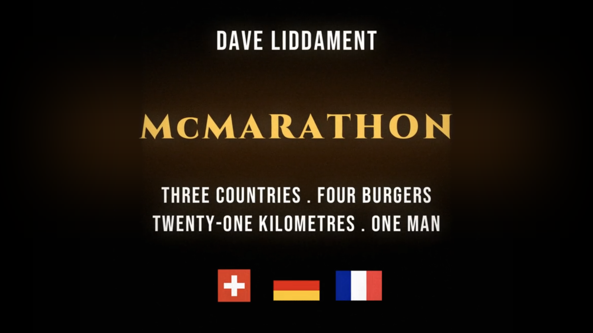

Systems Engineer to Cisterns Engineer
The bootcamp for software engineers who want to switch to plumbing.

Last October I ran 21km around Basel and ate a McDonald's hamburger in three countries. Switzerland, Germany, France, then back to Switzerland for a fourth.
I call it the McMarathon. Yes, I know 21km is half a marathon.
A year later all I had to show for it was a camera roll full of selfies, a few shaky clips and three crumpled receipts. They'd been sitting on my computer ever since. Then I saw that Opus 5.5 could make videos, so I asked it to turn them into a film trailer.
Can't see the video? Watch the McMarathon trailer on YouTube.
Two things surprised me. How little I had to tell it, and how much it worked out on its own.
Here's the whole prompt, word for word. All 163 words of it, "Muk marathon" and all.
I want to make a video about an epic achievement that I did last year. It was the Muk marathon. I ran to three different countries and ate a McDonald's burger in each country. I went back to the start in the first country and had a McDonald's there. The countries were:
- Switzerland
- Germany
- France
I went back to Basel, Switzerland, and had another one, so it's based around Basel.
I want to make a video where it sounds like it's a really epic achievement, like one of those films: one man, three countries, three burgers, one run, one mission, something like that. Really, really overegg it with a kind of soundtrack to go with it, so it sounds like it's a really incredible achievement.
I'll send you some images and some video bits if you want. Just make it sound way more impressive than it really is and way more of a challenge. Ask me any questions before planning out the video.
It came back with ten questions. I answered one of them, and attached some photos, some video clips and a photo of the receipts:
McMarathon. It was 21km
While it was working I sent one more message:
I think I won't do any voiceover stuff. You just flash it up on the screen. You can use whatever other visuals you need to get from the internet to sort this out.
That was it. No storyboard, no shot list. I didn't tell it which McDonald's I'd visited or what time I got to each one.
Then it chugged away for 40 or 50 minutes and came back with the trailer above.
It pieced the whole day together from the files themselves.
The photos carry the time they were taken in their metadata. For the videos it used the time in the file name, which my phone writes in UTC rather than local time. It noticed the two didn't line up. So it matched a clip of me eating my first burger against the 13:44 printed on the Basel receipt and worked out the two-hour difference.
After that everything slotted into order. 13:44 in Basel, 14:25 in Weil am Rhein, 15:22 in Saint-Louis and 16:48 back in Basel.
The receipts gave it the addresses: Barfüsserplatz in Basel, Colmarer Straße in Weil am Rhein and rue de Séville in Saint-Louis. It looked up where those are.
Then it went through the footage. It picked out Basel's town hall, a bridge over the Rhine, the riverside where the cruise boats moor and the "Frontière" sign where I crossed from France back into Switzerland. Even photos that didn't make the final cut helped it pin down the order of the day.
Put together, that was enough to draw my route on an animated map.
I've compared it with the route I actually ran. It's not a million miles off.
I'd assumed it had pulled my location out of the EXIF data. It hadn't. It used the metadata for timings, not locations. It didn't use any GPS data at all, and it was upfront that the path between the restaurants was its best guess. To be fair, that makes it more impressive to me, not less. It's detective work, not reading off a coordinate.
Some of the best bits were things I never asked for.
It finished the trailer with "No burgers were harmed in the making of this film", followed by "Actually, four were." I didn't come up with that. It was all Opus 5.5. It's fair to say Claude is funnier than me. Although that's not the highest bar in the world.
It read the French receipt and noticed the small Coke cost €3.30 and the burger €2.75. "In France, the Coke cost more than the burger" made it into the film.
It spotted a "2 min" sign pointing to the McDonald's in Weil am Rhein and turned it into a dramatic beat: THE SIGN SAID TWO MINUTES.
It blurred the card-number lines on the receipts before zooming in on them.
The map data it could download was too coarse and put Weil am Rhein on the Swiss side of the border. So it drew its own map of the Rhine and the three borders instead.
It wrote the soundtrack too, in code. Drums, big brass hits and a rising swell before the title, all timed to the cuts.
And when it couldn't do something, it said so. It couldn't make out what I was saying in my talking-to-camera clips, so it used them without sound and told me.
It's a bit of fun. Nobody needed a trailer for a man eating four hamburgers.
But I shared it with friends and something nice happened. A few people messaged me who I hadn't spoken to in a while. Lots of people engaged with it, and quite a few said it made them laugh.
Add it all up and a 90-second video might have brought a couple of hours of joy to the world.
Is it worth it? I think so.
What's sitting in your camera roll that deserves the trailer treatment?
The bootcamp for software engineers who want to switch to plumbing.
The code that executes PHP is currently written in C. Converting this to Rust offers many advantages. This article talks about work in progress to convert the C code to Rust, using Chat GPT.